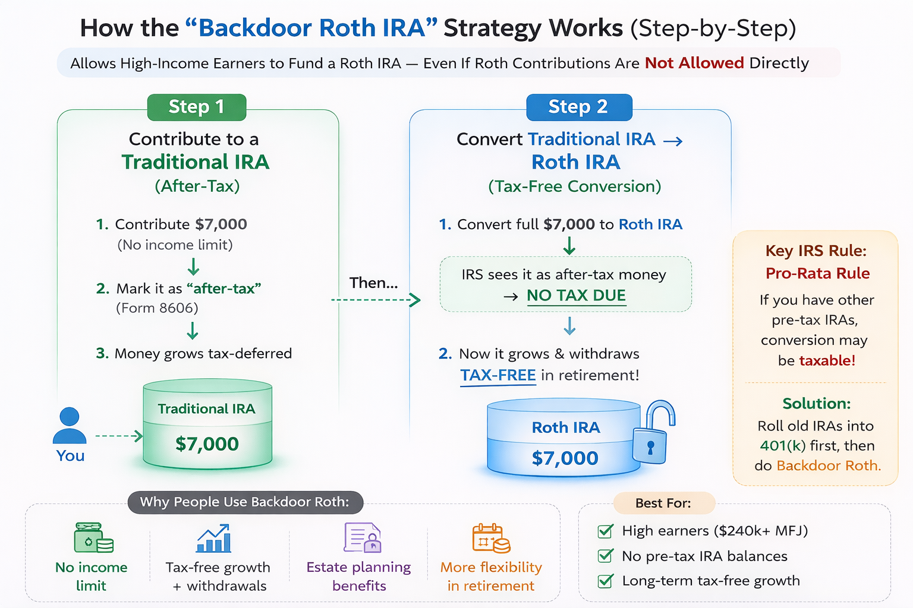

Field Notes
Field Notes
Long-form notes on money, work, home, technology, science, and real estate.
Note library
Current notes
Core categories: Money, Work, Home, Technology, Science, Real Estate.
Money
- Tax Advantaged Accounts Money
- Backdoor Roth IRA strategy Money
Work
- Using AI to build a career documentation pipeline Work AI
- 0->1 Product Management Work
- Product Lingo Work
- Start Up vs. Big Org Product Management Work
- Culture and Process Work
Home
- Hardscaping Home
- Paint and Plaster Home
- Framing and Electric Home
- Plumbing Home
- Native Plants Home
Technology
- Einstein and AI, tensor math and vector databases Technology Science
- Context Window, RAG, and MCP Technology
Science
- Einstein and AI, tensor math and vector databases Technology Science
- 70s HiFi Science
Real Estate
- No notes yet
Money
Note 1: Tax Advantaged Accounts
A quick comparison of the main tax-advantaged accounts people use for retirement and medical savings.
| Feature | 401(k) | Roth 401(k) | Traditional IRA | Roth IRA | HSA |
|---|---|---|---|---|---|
| Who offers it | Employer | Employer | You | You, with income limits[2] | You, if enrolled in an HSA-eligible HDHP |
| Tax Free Contribution | ✓ Yes | ✗ No | Maybe, depends on income and if workplace offers plan[1] | ✗ No | ✓ Yes |
| Tax Free Growth | ✓ Yes | ✓ Yes | ✓ Yes | ✓ Yes | ✓ Yes |
| Tax Free Withdrawal | Ordinary income | ✓ Tax-free | Ordinary income | ✓ Tax-free | ✓ Tax-free for qualified medical expenses |
| 2026 contribution limit | $24,500 | Combined with 401(k) | $7,500 | $7,500 | $4,400 individual / $8,750 family |
| Catch-up contribution | $8,000 age 50+; $11,250 age 60-63 | Combined with 401(k) | $1,100 age 50+ | $1,100 age 50+ | $1,000 age 55+ |
| Income limit to contribute | ✗ None | ✗ None | ✗ None | ✓ Yes, subject to phase-out | ✗ No income limit |
| Employer match | ✓ Yes, if plan offers it | ✓ Yes, if plan offers it | ✗ No | ✗ No | Sometimes |
| Required minimum distributions | ✓ Yes | ✗ No | ✓ Yes | ✗ No | ✗ No |
| Best use case | Reduce taxes now, especially with a match | Lock in tax-free retirement withdrawals | Extra tax-advantaged retirement space | Tax-free retirement growth and flexibility | Medical savings with strong tax treatment |
2026 income phase-outs
- Roth IRA, single: $153,000 to $168,000
- Roth IRA, married filing jointly: $242,000 to $252,000
- Traditional IRA deduction, single and covered by workplace plan: $81,000 to $91,000
- Traditional IRA deduction, married filing jointly and covered by workplace plan: $129,000 to $149,000
Footnotes
- [1] Traditional IRA contributions reduce taxable income only if deductible. Deductibility depends on income and whether you or your spouse are covered by a workplace retirement plan.
- [2] Roth IRA contributions are subject to income phase-outs. For 2026, the phase-out starts at $153,000 for single filers and $242,000 for married filing jointly.
Sources: IRS 2026 retirement plan limits, Notice 2025-67; IRS 2026 HSA limits, Rev. Proc. 2025-19.
Money
Note 2: Backdoor Roth IRA strategy
Imported from your Downloads folder as an image guide. Open it full size or preview it below.

Work
Note 3: Using AI to build a career documentation pipeline
I started with the browser: copying and pasting prompts, rewriting bullets, and using each chat like a fresh scratchpad. That worked for simple edits, but it broke down once I was doing this repeatedly across resumes, cover letters, and application answers.
The browser got slow, and the bigger problem was context. Every new chat meant starting over: re-explaining my work history, the kinds of roles I was targeting, and the examples that actually represented my experience well. I was spending too much time reconstructing the same story.
Moving into the terminal changed that. Once I started keeping my source material locally, AI stopped feeling like a one-off writing tool and started behaving more like part of a workflow. I could save context, refine it over time, and reuse it instead of rebuilding it from scratch in every conversation.
From there I started treating my work history as structured input instead of scattered memory. Roles, projects, outcomes, examples, strengths, and themes all became reusable material. That material could then feed multiple outputs: tailored resume bullets, cover letters, application answers, and positioning for different kinds of product and operations roles.
The most useful shift was separating documentation from generation. First I document what I actually did and what changed because of it. Then I use AI to transform that record for a specific use case. That makes the process more reliable. I am not asking the model to invent substance. I am asking it to organize, translate, and tailor a body of work that already exists.
Source of truth
Work history
- roles
- projects
- outcomes
- strengths
- themes
AI workflow
Context + tailoring
saved local context, role targeting, rewriting, and adaptation for each application
Per application
What I am building now is a lightweight pipeline for career materials: maintain the underlying history once, then generate better resumes and cover letters with less repetition and less drift. The browser was useful for getting started. The terminal made it faster. Local context made it cumulative, and that is what turned prompting into a real workflow.
Technology and Science
Technical note set
A new track for compact explainers on math, AI infrastructure, and physics concepts.
Technology and Science
Note 4: Einstein and AI, tensor math and vector databases
A simple map of how tensor math connects physics and machine learning, and how vectors show up in the retrieval layer of modern AI systems.
Big idea
Einstein and AI are not “the same math,” but they do share a useful language: tensors help describe structured relationships across many dimensions. In physics, tensors describe things like curvature and stress in spacetime. In AI, tensors are the basic containers used to represent inputs, weights, activations, and gradients.
Three building blocks
- Scalars: one number, like temperature or loss.
- Vectors: ordered lists of numbers, like an embedding.
- Tensors: higher-dimensional arrays that generalize vectors and matrices.
| Concept | In physics | In AI | Why it matters |
|---|---|---|---|
| Vector | Direction and magnitude in space | Embedding for text, image, or user behavior | Lets you compare things by distance or similarity |
| Tensor | Object used to describe curvature, stress, and fields | Core data structure for neural networks and training | Keeps track of values across multiple dimensions |
| Geometry | Mass-energy changes the geometry of spacetime | Embeddings organize meaning in a geometric space | Structure in the space helps explain relationships |
| Search | Find paths such as geodesics through curved spacetime | Find nearest neighbors in embedding space | Useful answers often come from “what is closest” |
Einstein side: why tensors matter
General relativity describes gravity not as a force pulling objects together, but as curvature in spacetime. To describe curvature in a coordinate-independent way, the theory uses tensors. That is why the Einstein field equations are written with tensor objects rather than ordinary algebra alone.
AI side: where tensors and vectors show up
In machine learning frameworks, almost everything is a tensor: batches of tokens, image pixels, weight matrices, activations, and gradients. A vector database sits one layer higher. It stores embeddings, which are vectors representing semantic meaning, and helps retrieve the nearest matches for search, recommendation, and RAG systems.
An LLM turns the words in your prompt into numbers, looks for patterns it learned during training, and predicts the most likely next token one step at a time until it builds a full response.
Example: a real LLM tensor
One common tensor inside a language model is the hidden-state tensor.
A simplified shape might look like [batch, tokens, hidden_size].
For example, [2, 4, 8] means:
- 2 sequences in the batch
- 4 token positions per sequence
- 8 numbers used to represent each token at that layer
hidden[0, 1, :] gives the
model's internal representation for that token at that layer.
| Tensor slice | Example values | What it represents |
|---|---|---|
hidden[0, 0, :] |
[0.21, -0.44, 0.08, 1.12, -0.35, 0.67, 0.03, -0.91] |
The internal vector for the first token in the first sequence |
hidden[0, 1, :] |
[0.18, -0.39, 0.11, 1.05, -0.28, 0.72, 0.09, -0.84] |
The next token after the model updates its representation with context |
hidden[1, 0, :] |
[-0.07, 0.92, -0.31, 0.14, 0.55, -0.22, 0.41, 0.10] |
The first token in a different sequence from the same batch |
Those numbers are not words by themselves. They are learned features. Together they encode properties the model has inferred about the token in context: syntax, meaning, nearby dependencies, and signals useful for predicting the next token.
Vector databases in one sentence
A vector database stores embeddings and lets you search for similar items quickly, often with metadata filters layered on top.
Where the analogy helps
- Both physics and AI use geometry to make structure easier to reason about.
- Both rely on tensors to represent complex relationships compactly.
- Both benefit from thinking in spaces, coordinates, and transformations.
Where the analogy breaks
- Embedding space is not physical spacetime.
- Similarity search is not the same thing as physical motion or curvature.
- AI tensors are implementation tools; relativity tensors are part of the theory itself.
Practical takeaway
If you understand tensors as “structured values across dimensions” and vectors as “positions in a space,” you can hold both ideas at once: Einstein uses tensors to describe reality, and AI uses tensors and vectors to compute patterns and retrieve meaning.